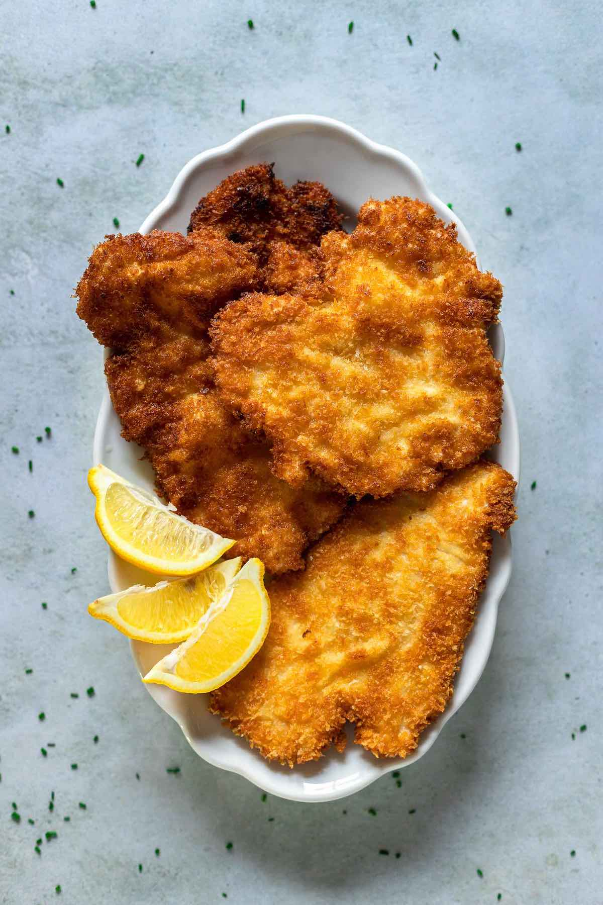
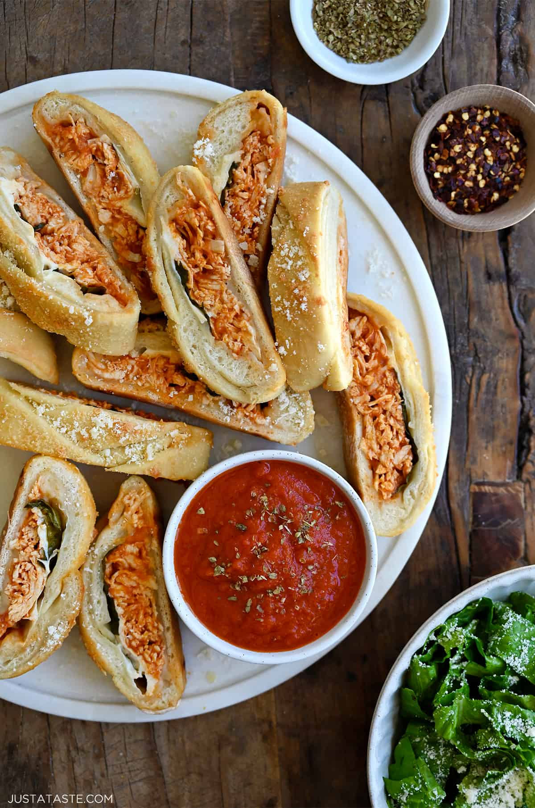
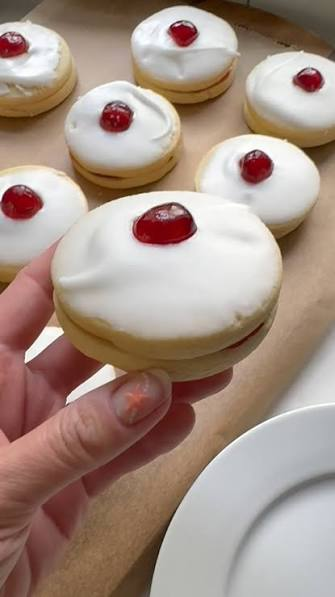

Recipes
Chicken Schnitzel
Cooking Time: 15 minutes
Servings: 6
Author: Arman Liew

Ingredients
- 3 chicken breasts halved diagonally
- 1/2 teaspoon salt
- 1/2 teaspoon pepper
- 1/2 cup flour
- 2 large eggs whisked
- 1 cup bread crumbs
- 1/4 cup oil to fry
Instructions
-
Place the chicken breasts between saran wrap and pound into 1/4
inch thickness.
-
Add the flour, salt, and pepper in one bowl, eggs in another
bowl, and the bread crumbs in a third bowl.
-
Moving quickly, dip the chicken in the flour mix, followed by
the eggs, and then the bread crumbs. Shake off the excess from
each breast.
-
Add oil to a non-stick pan. Once hot, fry the chicken for 8
minutes, flipping halfway through. Remove the chicken once
golden brown. Place the chicken on a wire rack for maximum
crispiness.
Cheesy Chicken Stromboli
Cooking Time: 50 minutes
Servings: 4
Author: Kelly Senyei

Ingredients
- 1 pound homemade or store-bought pizza dough
- 2 cups shredded rotisserie chicken
- 2/3 cup shredded Parmesan cheese, plus more for garnishing
- 1 cup homemade or store-bought marinara sauce, divided
- 4 slices fresh mozzarella cheese
- 1/3 cup fresh basil leaves
- 2 Tablespoons olive oil
Instructions
-
Preheat the oven to 375ºF. Line a baking sheet with parchment
paper.
-
Lightly flour your work surface then roll out the pizza dough to
a rectangle measuring 11×13 inches.
-
In a small bowl mix together the shredded chicken with the
Parmesan cheese and ½ cup of the marinara sauce.
(Reserve the remaining ½ cup of marinara sauce for dipping.)
-
Position the dough so the longer side is closest to you then
arrange the chicken mixture in the center of the dough. Top the
chicken with the sliced mozzarella and then the basil leaves.
-
Beginning 1 inch from the top of the dough, cut 1/2-inch slits
from the center of the dough outward toward the edges. Fold the
top portion of the dough over then alternately braid the strips
across the center. Cut off any excess dough then tuck the two
end pieces underneath the stromboli. Transfer the stromboli to
the baking sheet.
-
Brush the top of the stromboli with the olive oil, sprinkle it
with additional Parmesan cheese then bake it for 25 to 30
minutes until it’s golden brown and the cheese is melted. Remove
the stromboli from the oven, transfer it to a rack and let it
rest for 10 minutes. Slice and serve.
Scottish Empire Biscuits
Cooking Time: 25 minutes
Servings: 20
Author: Christina Conte

Ingredients
- 2 sticks butter (at room temperature)
- ⅓ cups sugar
- 1 egg
- 3 ½ cups all purpose flour (organic, if possible)
- 2 cups confectioner's sugar
- 20 candied cherries (to decorate)
- 13 oz raspberry jam (as needed)
Instructions
-
Preheat oven to 400℉ (200℃)
-
Mix the butter and sugar together until it forms a homogenous
mixture. Add the egg and mix well. Next add the flour until it
forms a crumbly consistency.
-
Turn onto a floured surface and form into a smooth dough. Do not
overwork the dough. Roll out quite thinly (about 1/8") and cut
into rounds with a cookie cutter.
-
Place on lined baking sheet and bake for 8-10 minutes (I turn
them once through baking). Put on cooling rack. Then, when
completely cool, choose a mate for each cookie.
-
Coat the tops with confectioner's sugar mixed with milk or water
(to a thick, but runny consistency as in the photo below).
-
Top with a piece of candied cherry in the center, then sandwich
together cookies with raspberry jam and enjoy with a cup of tea!